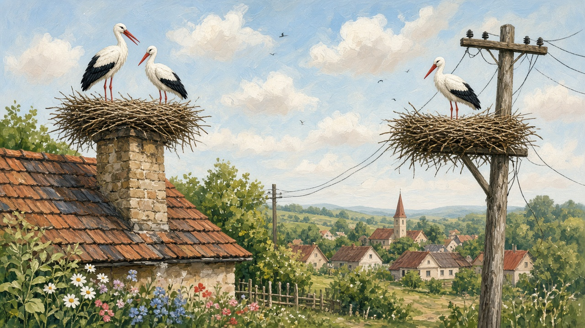

Storks
Barză, and the definite barza. The white bird on a chimney or a pole — not the heron in the reeds. The nest people mean when they talk about the village yard.

The nest on the roof
The cuib sits where the sky is open: a chimney, the horn; an electric pole, a stâlp; the church roof if the tiles will take the weight. From the road it is a dark pile of sticks that looks careless until you watch it hold a storm. People still put a floor under it — an old cartwheel, a roată de car, nailed to a pole or to the gable — so the nest does not slide and the bird does not have to argue with tin. The house does not own the stork. The stork uses the house. In a sat on the plains you see that silhouette before you see whose gate it is. The lane, the fence, the neighbors who know the nest as well as they know the dog, sit on villages. The yard under it is the one on the house.
When they come, when they go
They come back in spring, often in the same week the village already expects. Someone says the storks are here, and the year has a date that is not on the church wall. The pair fuss the old sticks, add a few, and the clacking starts over the maize. They leave in late summer or early autumn: the young first, then the rest, and the nest sits empty through the snow, a basket of twigs against the sky. That turn is a calendar marker the way the first green or the last jar is a marker — it sits with the year, not as a feast or a fast, but as the week people still use when they talk about when the grass was high. You do not need a migration map. You need the habit of looking up in March.
A good sign, said plainly
Villagers still talk about a nest on the house as a good sign. Noroc for the household. A blessing that does not need a priest to name it. The talk is older than the electric pole, and it is not a fairy tale you act out. A pair that returns means the roof is still standing, the village is still a village, and the yard is still worth claiming. When the nest is gone a season, people notice the way they notice a locked gate. Nobody has to believe every old sentence about luck. They still look at the chimney in March, and they still tell a neighbor if the birds came back.
Not the birds in the reeds
This is the white stork of the plains and the village roofs. Barza if you are standing in the yard. It is not the heron, the stârc, still as a stake in the Delta, and it is not the pelican on a sandbar. Those birds, the channels, the houses with one foot in the water, sit on wildlife and on the delta. Do not mix them. One lives over the maize and the chimney. The other lives where the Danube opens into reeds. If someone in town says they saw storks, ask whether they mean a nest on a pole in the county they come from, or a heron on a weekend in the water.